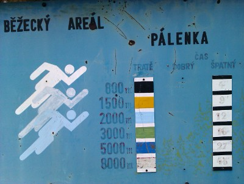

Barva ze stromů se už oprýskává a proto vznikly tyto stránky, které Vám zprostředkovávají
trasy zaznamenané pomocí GPS.
Trasy si můžete zobrazit nebo stáhnout jako gpx: tracks.zip.
Zdrojový kód: https://github.com/xbenes/bezecky-areal-palenka